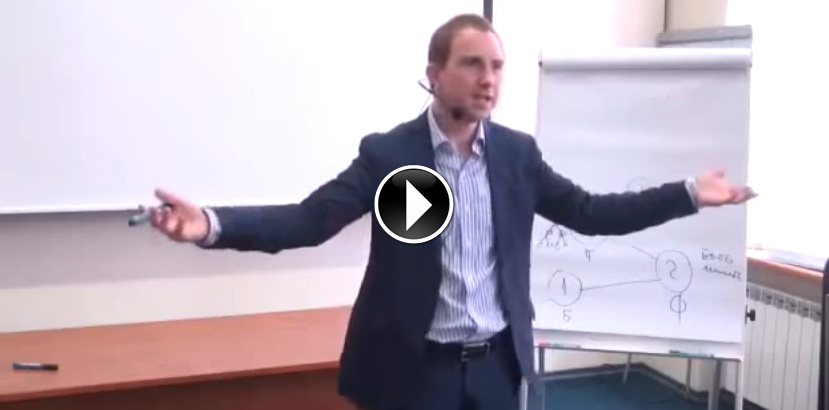

Как мотивировать и вдохновлять людей
с помощью Спиральной динамики
Бесплатный видео-тренинг

В течение 30 лет Клэр Грэйвз исследовал более 50.000 человек и обнаружил, что все люди в ходе своего развития проходят один и тот же маршрут.
Какого цвета Ваше лидерство?

Какие еще возможности дает Лидерам знание семи уровней лидерства?
- Видеть людей насквозь и знать, чего от них ожидать, задав всего пару вопросов. А иногда и просто услышав его речь.
- Предсказывать решения людей и их действия прежде, чем они сами поймут, как поступят. Потому что шаблоны их мышления известны и очевидны.
- Вдохновлять, создавая глубинную мотивацию. Потому что их ценности и глубинные мотивы понятны.
- Понимать какие задачи способен решить этот человек на самом деле, и какой у него потенциал. А также знать, как он будет себя вести в кризисной ситуации.
В программе мастер-класса
- От «чего» и к «чему» человек развивается как личность?
- Как «измерить» насколько человек развился?
- Что является конечной целью личностного развития?
- Почему тренеры и коучи так любят модель Спиральной Динамики?
- Чем отличаются семь уровней лидерства, и как работает лидерство на каждом из уровней?
- Чем отличается мышление людей (а так же их цели и ценности) на 8 уровнях развития, и что могут одни и не способны даже понять другие?
- Как научиться говорить с представителем каждого уровня на языке его мышления: как вдохновлять его, мотивировать, и эффективно управлять им?
- И, наконец, как применить это все к себе и выйти на следующий уровень, чтобы открылись новые возможности и «притянулись» новые интересные люди?
Чтобы лучше подготовится к мастер-классу, Вы можете пройти тест для определения своего уровня по Спиральной Динамике.
Ссылка на тест будет доступна Вам сразу после регистрации в зеленой форме ниже.
Пройти тест лучше до просмотра видео, так как после просмотра Вы будете уже знать "правильные ответы" и результаты теста будут не валидны.
Бонус!
Через некоторое время после регистрации мы пришлем Вам еще один эксклюзивнейший материал. Это методичка с тренинга "Семь уровней лидерства 2.0", в которой раскрываются основные "ключи" Спиральной динамики. Это ценности и стратегии мышления каждого уровня, которые Вы можете использовать для мотивации и вдохновения каждого уровня.
Ведущий мастер-класса

Егор Булыгин - M.A. NLP, сертифицированный коуч, сертифицированный тренер НЛП (Международный Эриксоновский Университет, Канада)
Год рождения - 1977, г. Москва. Веду тренинги и частную практику с 2003 года, занимаюсь НЛП с 2000 года.
Спиральной динамике обучался у Дона Бека и Криса Кована на их живых семинарах. А так же на профессиональном курсе по коучингу в Эриксоновском Университете. Знаком с методикой уже более 6 лет, многократно проводил трансформационные тренинги и коучинг на ее основе, а также обучал ей непосредственно, как модели.
Применял (и продолжаю) Спиральную динамику в своей жизни как инструмент, формирующий четыре уровня окружения: семья, друзья и бизнес-команда, коллеги и учителя, рынок и социальная среда общения. Во многом благодаря именно этому инструменту я могу сказать, что живу и работаю с теми людьми, с которым мне по-настоящему нравится это делать.
До встречи на мастер-классе!